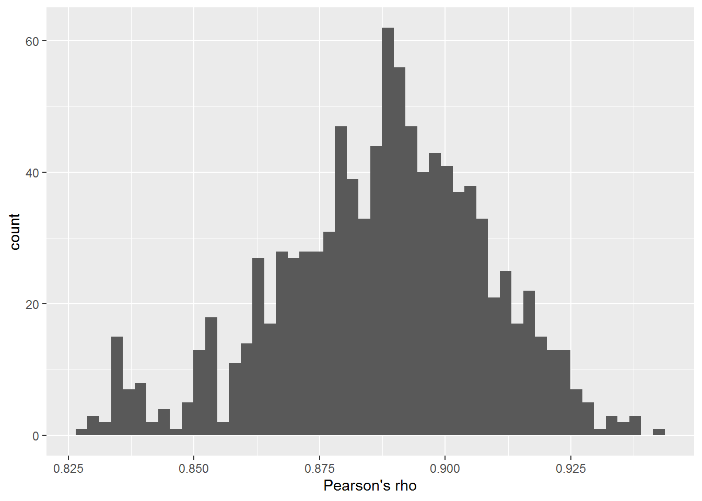
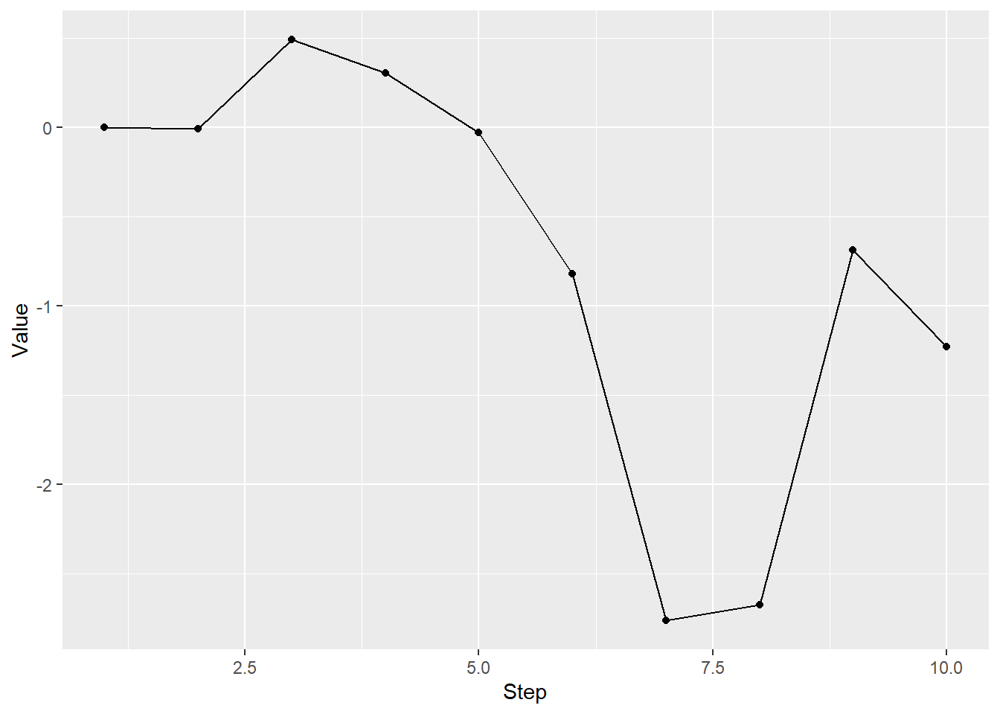
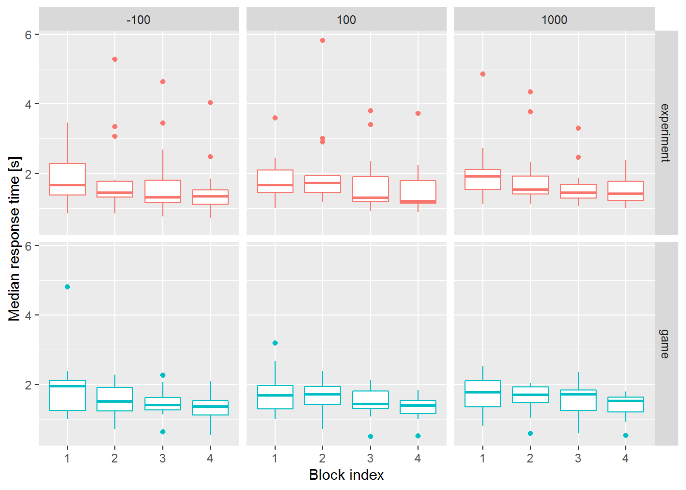
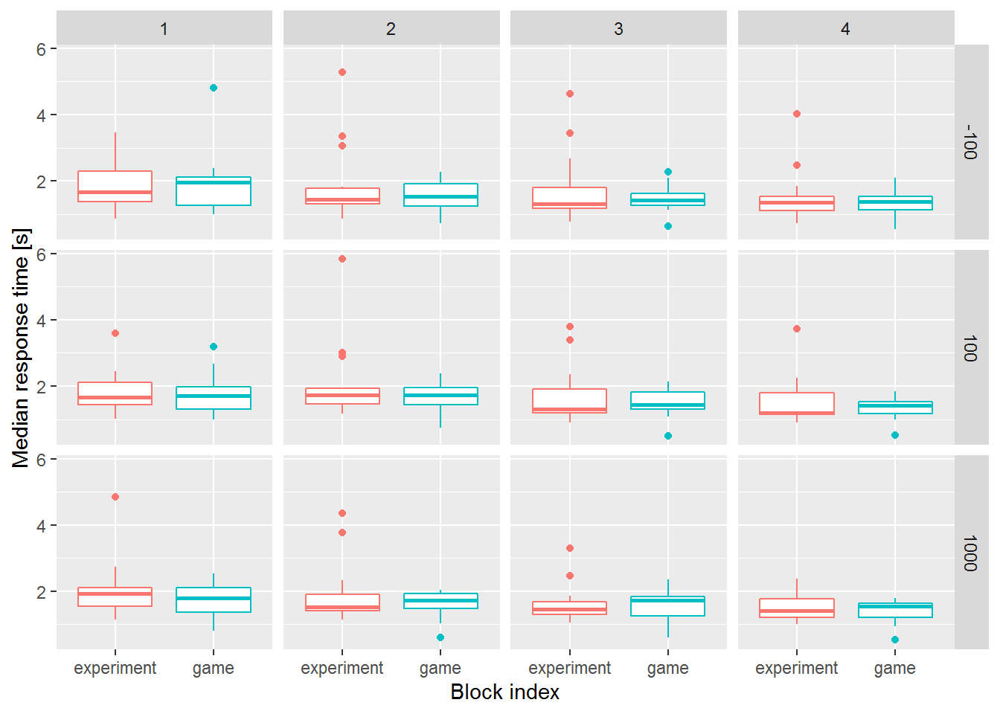
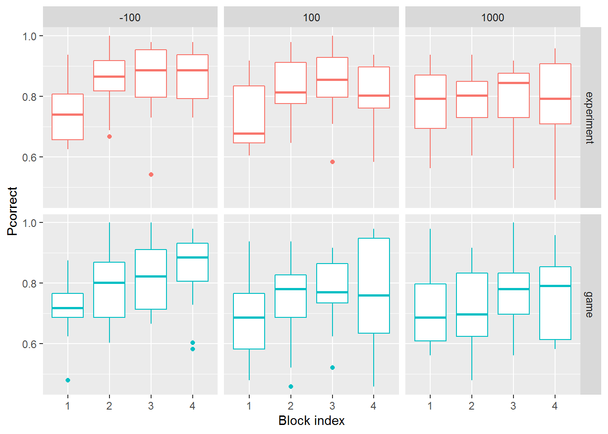

Seminar 11 Statistical modeling
I suspect that this is a seminar that you were waiting for the most as it finally tells you how to call statistical functions in R. However, from my perspective, it is the least useful seminar in the entire course because if you know statistics and you know which specific tool you need, figuring out how to use it in R is fairly trivial. Conversely, if your knowledge of statistics is approximate, knowing how to call functions will do you little good. The catch about statistical models is that they are very easy to run (even if you implement them by hand from scratch) but they are easy to misuse and very hard to interpret54.
To make things worse, computers and algorithms do not care. In absolute majority of cases, statistical models will happily accept any input you provide, even if it is completely unsuitable, and spit out numbers. Unfortunately, it is on you, not on the computer, to know what you are doing and whether results even make sense. The only solution to this problem: do not spare any effort to learn statistics. Having a solid understanding of a basic regression analysis will help you in figuring out which statistical tools are applicable and, even more importantly, which will definitely misguide you. This is why I will give an general overview with some examples simulations but I will not explain here when and why you should use a particular tool or how to interpret the outputs. Want to know more? Attend my Statistical Rethinking seminar or read an excellent book by Richard McElreath that the seminar is based on.
11.1 Formula notation
Using statistical models in R is particularly easy because most packages make use of a formula to describe a model. Different functions and packages interpret the formula mostly the same way with differences arising due to how random effects or additional parameters are described. Here is an example of a formula:
y ~ 1 + x1 + x2 + x1:x2It says that the outcome variable y should be a modeled as a linear combination of an intercept 1 (can be omitted in a formula), predictor variables x1 and x2, plus their interaction x1:x2. This also assume that all these variables are in a single table that you also supply to the function (typically called data parameter). Same formula can be shortened by using * which means “all predictors and their interaction,” thus (omitting redundant intercept)
y ~ x1*x2You can also exclude specific terms via -. So, if you insist that the intercept must go through 0, you write “exclude intercept term” as -1
y ~ x1*x2 - 1Or you can exclude a specific term or an interaction. The two formulas below are equivalent with a main effect for x2 and an interaction term but no main effect for x1. However, I would generally discourage you from using - as the first formula is much harder to understand (or, much easier to misunderstand).
y ~ x1*x2 - x1
y ~ x2 + x1:x211.2 Correlation
To compute correlation, use function cor(). You have a choice of method, either "pearson" (default, Pearson’s product moment correlation coefficient), or rank-based "kendall" (Kendall’s tau) or "spearman" (Spearman’s rho).
df <-
tibble(x = rnorm(100)) %>%
mutate(y = rnorm(n(), x, 0.5))
cor(df$x, df$y, method="pearson")## [1] 0.8991517Alternatively, you can use cor.test() that also computes test statistics and significance.
cor_result <- cor.test(df$x, df$y, method="pearson")
cor_result##
## Pearson's product-moment correlation
##
## data: df$x and df$y
## t = 20.339, df = 98, p-value < 2.2e-16
## alternative hypothesis: true correlation is not equal to 0
## 95 percent confidence interval:
## 0.8534634 0.9311242
## sample estimates:
## cor
## 0.8991517cor.test returns a list, so you can access its individual elements55 via a double-bracket or $ notation.
cor_result$p.value## [1] 6.01944e-37Bayesian correlation with a posterior distribution for the correlation coefficient and Bayes Factor as a measure of significance, can be computed via correlationBF() function, which is part of BayesFactor package.
library(BayesFactor)
correlationBF(df$x, df$y)## Bayes factor analysis
## --------------
## [1] Alt., r=0.333 : 2.920163e+32 ±0%
##
## Against denominator:
## Null, rho = 0
## ---
## Bayes factor type: BFcorrelation, Jeffreys-beta*cor_bf <- correlationBF(df$x, df$y, posterior = TRUE, iterations=1000)
ggplot(data=NULL, aes(x=c(cor_bf[, "rho"]))) +
geom_histogram(bins=50, ) +
xlab("Pearson's rho")
11.3 Pairwise comparisons
For pairwise comparisons for normally distributed data, you can use Student’s t-Test via t.test(). Here, I generate to x as a normally distributed normal variable and y, as a normally distributed variable random whose mean is x+0.5. I am using library ggbeeswarm to generate the nicely looking cloud of dots.
set.seed(14454)
df <-
tibble(x = rnorm(100, mean = 1, sd = 1)) %>%
mutate(y = rnorm(100, mean = x + 0.3, sd = 1))
You can perform t-test assuming that samples in two variables are independent
t.test(df$x, df$y, paired = FALSE)##
## Welch Two Sample t-test
##
## data: df$x and df$y
## t = -1.8603, df = 184.37, p-value = 0.06443
## alternative hypothesis: true difference in means is not equal to 0
## 95 percent confidence interval:
## -0.65829852 0.01933491
## sample estimates:
## mean of x mean of y
## 1.018298 1.337780Or, that they are paired, i.e., repeated-measures design (note the change in estimates, statistics, and significance).
t.test(df$x, df$y, paired = TRUE)##
## Paired t-test
##
## data: df$x and df$y
## t = -3.3432, df = 99, p-value = 0.00117
## alternative hypothesis: true difference in means is not equal to 0
## 95 percent confidence interval:
## -0.5090948 -0.1298688
## sample estimates:
## mean of the differences
## -0.3194818You can also use formula notation, if one variable describes grouping
df_group <-
tibble(x = c(df$x, df$y),
group = factor(c(rep("A", 100), rep("B", 100))))| x | group |
|---|---|
| 1.3776580 | A |
| 1.8338910 | A |
| -0.3034055 | A |
| 1.3079381 | A |
t.test(x ~ group, data=df_group, paired=TRUE)##
## Paired t-test
##
## data: x by group
## t = -3.3432, df = 99, p-value = 0.00117
## alternative hypothesis: true difference in means is not equal to 0
## 95 percent confidence interval:
## -0.5090948 -0.1298688
## sample estimates:
## mean of the differences
## -0.3194818A Bayesian version is provided via ttestBF() function, which is part of the BayesFactor package.
library(BayesFactor)
ttestBF(x = df$x, y=df$y, paired=TRUE)## Bayes factor analysis
## --------------
## [1] Alt., r=0.707 : 19.27724 ±0%
##
## Against denominator:
## Null, mu = 0
## ---
## Bayes factor type: BFoneSample, JZSFor a non-parametric pairwise test, you can use Wilcoxon Rank Sum and Signed Rank Tests wilcox.test(). Package coin implements many tests, including permutation tests, such as Two- and K-sample Fisher-Pitman permutation test via oneway_test() that tests for the equality of the distributions in independent groups, see vignette for details.
11.4 ANOVA
ANalysis Of VAriance is probably the most widely used analysis in social sciences. However, I would strongly suggest considering generalized linear mixed models instead. Unlike ANOVA they can work when residuals are not normally distributed (binomial, count, Likert-scale ordered categorical, proportions data, etc.), they can tolerate missing values, and they tend to overfit less (their results are likely to better generalize to future data) by assuming that individual participants are more average than they appear in the raw data (so-called shrinkage).
First, let us simulate data for ten participants and their responses, assuming that condition B increases their responses by 2 (arbitrary) units and C by 356.
set.seed(519264)
df_anova <-
# generate ten participants with five trials per condition
expand_grid(Participant = factor(1:10),
Condition = factor(c(rep("A", 3), rep("B", 3), rep("C", 3)))) %>%
# decide on a SINGLE baseline (intercept) for each participant
group_by(Participant) %>%
mutate(Intercept = rnorm(1, 5, 2.5)) %>%
# simulate normally distributed responses, assuming that are 3 units higher for condition "B"
ungroup() %>%
mutate(Response = rnorm(n(), Intercept + 2 * as.integer(Condition == "B") + 3 * as.integer(Condition == "C"), 1.5)) %>%
select(-Intercept) The base R ANOVA function is called aov(), however, it does not support repeated measures. Instead, you can use function
The base R ANOVA function is called aov(), however, it does not support repeated measures. Instead, you can use function anova_test from package rstatix
For the repeated-measures ANOVA, we need to specify column with identity of participants via parameter wid
library(rstatix)
anova_test(data=df_anova, Response ~ Condition, wid=Participant)## ANOVA Table (type II tests)
##
## Effect DFn DFd F p p<.05 ges
## 1 Condition 2 87 7.418 0.001 * 0.146You can perform various pairwise post-hoc tests, e.g. Tukey
tukey_hsd(df_anova, Response ~ Condition)tukey_hsd(df_anova, Response ~ Condition) %>%
knitr::kable()| term | group1 | group2 | null.value | estimate | conf.low | conf.high | p.adj | p.adj.signif |
|---|---|---|---|---|---|---|---|---|
| Condition | A | B | 0 | 1.8015391 | 0.2763798 | 3.326698 | 0.01640 | * |
| Condition | A | C | 0 | 2.3560918 | 0.8309325 | 3.881251 | 0.00115 | ** |
| Condition | B | C | 0 | 0.5545527 | -0.9706066 | 2.079712 | 0.66200 | ns |
A Bayesian ANOVA with posterior distributions for individual coefficients and significance via Bayes Factor can be performed
via anovaBF function from BayesFactor package.
anovaBF(Response ~ Condition + Participant, whichRandom="Participant", data=data.frame(df_anova))## Bayes factor analysis
## --------------
## [1] Condition + Participant : 55450.04 ±0.85%
##
## Against denominator:
## Response ~ Participant
## ---
## Bayes factor type: BFlinearModel, JZSIf you decide for repeated-measure ANOVA, I would suggest using and reporting results for both frequentist and Bayesian ANOVA, as it will demonstrate that they do not depend on the choice of the statistical approach.
11.5 (Generalized) Linear Models
Base R provides function to perform linear regression lm() and generalized linear models glm() for binomial, count, and other types of data.
Let us generate a simple linear dependence between two parameters and see how lm() will infer the dependence. Our formula will be
\[ y = 20 + 4 * x + \epsilon\]
where \(\epsilon\) is normally distributed noise.
df_lm <-
tibble(x = 1:100) %>%
mutate(y = rnorm(n(), 20 + 4 * x, 50))
Now let us fit the linear model using formula y ~ x and use summary() function to see the details.
lm_fit <- lm(y ~ x, data=df_lm)
summary(lm_fit)##
## Call:
## lm(formula = y ~ x, data = df_lm)
##
## Residuals:
## Min 1Q Median 3Q Max
## -157.448 -30.581 -0.077 33.018 109.173
##
## Coefficients:
## Estimate Std. Error t value Pr(>|t|)
## (Intercept) 16.4483 9.1389 1.80 0.075 .
## x 4.0701 0.1571 25.91 <2e-16 ***
## ---
## Signif. codes: 0 '***' 0.001 '**' 0.01 '*' 0.05 '.' 0.1 ' ' 1
##
## Residual standard error: 45.35 on 98 degrees of freedom
## Multiple R-squared: 0.8726, Adjusted R-squared: 0.8713
## F-statistic: 671.1 on 1 and 98 DF, p-value: < 2.2e-16As you can see, values for both intercept and the slope are very close to our original design. If you need to extract information about individual coefficients, I recommend tidy() function from broom package that returns information about the model in a “tidy” format:
library(broom)
tidy(lm_fit)| term | estimate | std.error | statistic | p.value |
|---|---|---|---|---|
| (Intercept) | 16.448278 | 9.1389367 | 1.799802 | 0.074969 |
| x | 4.070054 | 0.1571132 | 25.905235 | 0.000000 |
11.6 (Generalized) Linear Mixed Models
Generalized linear mixed models allow you to incorporate information about random factors into the model. One of the most popular packages in R is lme4. Let us use LMM on data we generated for ANOVA. Here, we specify that we would like to have individual slopes for each participants via (1|Participant) notation57.
library(lme4)
lmer_fit <- lmer(Response ~ Condition + (1|Participant), data=df_anova)
summary(lmer_fit)## Linear mixed model fit by REML ['lmerMod']
## Formula: Response ~ Condition + (1 | Participant)
## Data: df_anova
##
## REML criterion at convergence: 359.6
##
## Scaled residuals:
## Min 1Q Median 3Q Max
## -2.3188 -0.7330 -0.1038 0.8131 2.0589
##
## Random effects:
## Groups Name Variance Std.Dev.
## Participant (Intercept) 3.966 1.991
## Residual 2.444 1.563
## Number of obs: 90, groups: Participant, 10
##
## Fixed effects:
## Estimate Std. Error t value
## (Intercept) 4.5005 0.6914 6.509
## ConditionB 1.8015 0.4037 4.463
## ConditionC 2.3561 0.4037 5.836
##
## Correlation of Fixed Effects:
## (Intr) CndtnB
## ConditionB -0.292
## ConditionC -0.292 0.500To get tidy summary you need to use function tidy but from broom.mixed
library(broom.mixed)
tidy(lmer_fit)| effect | group | term | estimate | std.error | statistic |
|---|---|---|---|---|---|
| fixed | NA | (Intercept) | 4.500512 | 0.6914189 | 6.509097 |
| fixed | NA | ConditionB | 1.801539 | 0.4036827 | 4.462760 |
| fixed | NA | ConditionC | 2.356092 | 0.4036827 | 5.836495 |
| ran_pars | Participant | sd__(Intercept) | 1.991432 | NA | NA |
| ran_pars | Residual | sd__Observation | 1.563456 | NA | NA |
To also get information about formal statistical significance, you can use an extension package lmerTest58.
library(lmerTest)
lmert_fit <- lmerTest::lmer(Response ~ Condition + (1|Participant), data=df_anova)
summary(lmert_fit)## Linear mixed model fit by REML. t-tests use Satterthwaite's method [
## lmerModLmerTest]
## Formula: Response ~ Condition + (1 | Participant)
## Data: df_anova
##
## REML criterion at convergence: 359.6
##
## Scaled residuals:
## Min 1Q Median 3Q Max
## -2.3188 -0.7330 -0.1038 0.8131 2.0589
##
## Random effects:
## Groups Name Variance Std.Dev.
## Participant (Intercept) 3.966 1.991
## Residual 2.444 1.563
## Number of obs: 90, groups: Participant, 10
##
## Fixed effects:
## Estimate Std. Error df t value Pr(>|t|)
## (Intercept) 4.5005 0.6914 11.4337 6.509 3.64e-05 ***
## ConditionB 1.8015 0.4037 78.0000 4.463 2.69e-05 ***
## ConditionC 2.3561 0.4037 78.0000 5.836 1.16e-07 ***
## ---
## Signif. codes: 0 '***' 0.001 '**' 0.01 '*' 0.05 '.' 0.1 ' ' 1
##
## Correlation of Fixed Effects:
## (Intr) CndtnB
## ConditionB -0.292
## ConditionC -0.292 0.500Again, we can use tidy to get coefficients information in a single table.
tidy(lmert_fit)| effect | group | term | estimate | std.error | statistic | df | p.value |
|---|---|---|---|---|---|---|---|
| fixed | NA | (Intercept) | 4.500512 | 0.6914189 | 6.509097 | 11.43367 | 3.64e-05 |
| fixed | NA | ConditionB | 1.801539 | 0.4036827 | 4.462760 | 78.00000 | 2.69e-05 |
| fixed | NA | ConditionC | 2.356092 | 0.4036827 | 5.836495 | 78.00000 | 1.00e-07 |
| ran_pars | Participant | sd__(Intercept) | 1.991432 | NA | NA | NA | NA |
| ran_pars | Residual | sd__Observation | 1.563456 | NA | NA | NA | NA |
Note that lmer() functions provide information about difference of each condition to the baseline (condition A) not no ANOVA-style significance for the “overall” effect of condition. For this, you can use function drop1, which test for a variable significance by dropping it from a model and checking whether it performed significantly worse without it.
drop1(lmert_fit)## Single term deletions using Satterthwaite's method:
##
## Model:
## Response ~ Condition + (1 | Participant)
## Sum Sq Mean Sq NumDF DenDF F value Pr(>F)
## Condition 91.042 45.521 2 78 18.623 2.446e-07 ***
## ---
## Signif. codes: 0 '***' 0.001 '**' 0.01 '*' 0.05 '.' 0.1 ' ' 1You can also use Bayesian generalized linear modeling via rstanarm and BRMS packages. The former is somewhat faster, as it does not require model compilation (makes big difference when data is small but you test a lot of models), but is less flexible.
11.7 Practice
For practice, we will use data from a gamification experiment. Participant performed the same challenging task setup as a typical (read, boring) experiment or styled as a game with trial score, combos, high score table, achievements, etc. The idea was to investigate whether this shallow gamification (there was no story and all elements were present only before or after each trial and provided no information on the task itself) would alter (hopefully, improve) their performance. We quantified it via proportion of correct responses, response time, and score achieved for each trial (that one, you will need to compute yourself). Below, we would like to understand effects of
- Experimental group coded in variable
Condition, either"experiment"or"game". - Task difficulty controller via cue-onset asynchrony. Participants could response while the stimulus was still on the scree (COA = -100 ms), shortly after it disappeared (COA=100 ms), or after a delay (COA = 1000 ms). We would expect that task is harder to longer COAs.
- Perceptual learning. As participants do the task, the become better at it and are likely to become both faster and more accurate for later blocks. So we need to incorporate that improvement over different blocks into our model. The overall block index is coded in
Blockvariable but we will need to create a new variableCOABlockthat will encode index of the block within each difficulty.
You will need to load data, preprocess data, plot accuracy, response times, and score relative for each condition, difficulty, and difficulty block, perform formal statistical analysis to see whether any of the factor have an effect. So, first, download gamification.zip and unzip into your R-seminar project folder. You should get gamification subfolder with all the files. There will be no template notebook, create it from scratch yourself and keep it organized, e.g., headings, comments, chunked code, etc.
Read files and preprocess data
The two steps should be a single pipe.
1. Read and merge all CSV files in gamification folder into a single table. It is “German Excel” formatted with : as a delimiter and , as a decimal point. To perform it most cleanly, use read_delim
function that allows you to specify the delimiter via delim parameter and the decimal point via locale parameter. You will need to read on how to specify the locale first. My advice, debug reading on a single file and then add reading-and-merging either via for loop or purrr mapping.
2. Compute whether response on each trial was correct (Response is equal to Match variable) and store it in Correct column. It is already present in the table but due to software glitch, some values are not correct. In general, it is not a bad idea to recompute such variables and compare them with table in the table, just to be on the safe side.
3. Drop columns SessionID, Color0, Color1, Color2, Color3, Which and FlipComplimentary. They are not relevant for the analysis and it is easier to look at uncluttered data.
| Observer | Condition | Block | Trial | COA | Target | Match | Response | RT | Correct | OnsetDelay |
|---|---|---|---|---|---|---|---|---|---|---|
| AAF1997w | experiment | 1 | 1 | -100 | column | TRUE | FALSE | 0.9619999 | FALSE | 0.7110000 |
| AAF1997w | experiment | 1 | 2 | -100 | column | FALSE | FALSE | 0.8230000 | TRUE | 0.7710001 |
| AAF1997w | experiment | 1 | 3 | -100 | row | FALSE | FALSE | 0.9500000 | TRUE | 1.3230000 |
| AAF1997w | experiment | 1 | 4 | -100 | column | TRUE | TRUE | 0.8500001 | TRUE | 0.8880000 |
Now we need to compute block index per difficulty (and per participant and condition). We will spin it off as a separate table and then join it with the main one.
1. Generate a summary table with a single row per Observer, Condition, COA, Block. Hint, you can use summarise(.groups="drop") with no additional arguments to get one row per group.
| Observer | Condition | COA | Block |
|---|---|---|---|
| AAF1997w | experiment | -100 | 1 |
| AAF1997w | experiment | -100 | 6 |
| AAF1997w | experiment | -100 | 7 |
| AAF1997w | experiment | -100 | 10 |
- Regroup the table by
Observer,Condition, andCOAand computeCOABLockblock index. It is simply a sequence from 1 till number of rows in the group, you can get the latter via n() function.
| Observer | Condition | COA | Block | COABlock |
|---|---|---|---|---|
| AAF1997w | experiment | -100 | 1 | 1 |
| AAF1997w | experiment | -100 | 6 | 2 |
| AAF1997w | experiment | -100 | 7 | 3 |
| AAF1997w | experiment | -100 | 10 | 4 |
| AAF1997w | experiment | 100 | 2 | 1 |
| AAF1997w | experiment | 100 | 4 | 2 |
- Now we can add
COABlockto the main table by joining the two. I would strongly recommend to name the new full table differently, e.g., the original could beresults_rawand the new oneresults. This is because if you join to table, overwriting one of them, and try to do joining again (you fixed it and now should work properly), you will get different column names as dplyr will enforce unique column names. It can get very confusing. - Filter out any rows where
COABlockis more than 4. Some participants volunteered to do more but for the analysis we need to have full data for everyone.
| Observer | Condition | Block | Trial | COA | Target | Match | Response | RT | Correct | OnsetDelay | COABlock |
|---|---|---|---|---|---|---|---|---|---|---|---|
| AAF1997w | experiment | 1 | 1 | -100 | column | TRUE | FALSE | 0.9619999 | FALSE | 0.7110000 | 1 |
| AAF1997w | experiment | 1 | 2 | -100 | column | FALSE | FALSE | 0.8230000 | TRUE | 0.7710001 | 1 |
| AAF1997w | experiment | 1 | 3 | -100 | row | FALSE | FALSE | 0.9500000 | TRUE | 1.3230000 | 1 |
| AAF1997w | experiment | 1 | 4 | -100 | column | TRUE | TRUE | 0.8500001 | TRUE | 0.8880000 | 1 |
Accuracy
Let us analyze accuracy, the results should be stored in a new separate table.
- Compute number of correct trials each
Observer,Condition,COAandCOABlockcombination. Also, store total number of trials for each combination in a separate variable (again, take a look at n() function). We need these two variables for the statistical analysis. - Compute proportion of correct responses. You can compute it directly from
Corrector from the two variables you computed on the previous step. We need this variable for visualization.
| Observer | Condition | COA | COABlock | Ncorrect | Ntotal | Pcorrect |
|---|---|---|---|---|---|---|
| AAF1997w | experiment | -100 | 1 | 38 | 48 | 0.7916667 |
| AAF1997w | experiment | -100 | 2 | 47 | 48 | 0.9791667 |
| AAF1997w | experiment | -100 | 3 | 47 | 48 | 0.9791667 |
| AAF1997w | experiment | -100 | 4 | 45 | 48 | 0.9375000 |
Let us visualize the performance. Generate a similar looking plot 
And an alternative visualization. 
The first one, shows an effect of experience (note how performance gets higher for the later blocks), for second one makes it easier to compare between conditions. Here, experiment tends to produce higher accuracy. However, this is just eye-balling the data, we need some actual numbers. For this, we will use Generalized Linear Mixed Model. It is generalized because out data is binomial (participants were successful in Ncorrect trials out of Ntotal). It is linear because we assume a simple linear sum of individual effects. It is mixed, because we will add Observer as a random factor59. We will also use COA as a factor variable to have a more direct comparison between individual COA levels. Read documentation to figure out how you specify the formula and binomial family. You will need to use library lmer4 and I strongly suggest using lmer4::glmer() notation as we will later use lmerTest package, which redefines some functions and it can be hard to figure out function from which package was actually called.
The summary output of the model should look like this.
## Generalized linear mixed model fit by maximum likelihood (Laplace
## Approximation) [glmerMod]
## Family: binomial ( logit )
## Formula: cbind(Ncorrect, Ntotal) ~ Condition + as.factor(COA) + COABlock +
## (1 | Observer)
## Data: accuracy
##
## AIC BIC logLik deviance df.resid
## 1788.8 1811.7 -888.4 1776.8 330
##
## Scaled residuals:
## Min 1Q Median 3Q Max
## -1.72915 -0.29164 0.02438 0.34443 1.09710
##
## Random effects:
## Groups Name Variance Std.Dev.
## Observer (Intercept) 0.01044 0.1022
## Number of obs: 336, groups: Observer, 28
##
## Fixed effects:
## Estimate Std. Error z value Pr(>|z|)
## (Intercept) -0.26288 0.04509 -5.830 5.55e-09 ***
## Conditiongame -0.05776 0.04539 -1.272 0.20323
## as.factor(COA)100 -0.05424 0.02905 -1.867 0.06191 .
## as.factor(COA)1000 -0.06163 0.02915 -2.115 0.03447 *
## COABlock 0.03216 0.01070 3.005 0.00265 **
## ---
## Signif. codes: 0 '***' 0.001 '**' 0.01 '*' 0.05 '.' 0.1 ' ' 1
##
## Correlation of Fixed Effects:
## (Intr) Cndtng as.(COA)100 a.(COA)1000
## Conditiongm -0.501
## as.(COA)100 -0.320 0.002
## a.(COA)1000 -0.323 0.002 0.491
## COABlock -0.600 0.000 0.003 0.010As you can see, experience definitely improves the accuracy (effect for COABlock is positive and significant), there seems to be some effect of difficulty at least between extreme cases of COA = -100 ms (baseline) and COA = 1000 ms. But, does not seem to be much of an effect of the condition. We can also confirm this ANOVA-style with a single significance value for each fixed factor via drop1() function, you will need to specify test = "Chisq" as a parameter to get significance values.
## Single term deletions
##
## Model:
## cbind(Ncorrect, Ntotal) ~ Condition + as.factor(COA) + COABlock +
## (1 | Observer)
## npar AIC LRT Pr(Chi)
## <none> 1788.8
## Condition 1 1788.3 1.5749 0.209504
## as.factor(COA) 2 1790.1 5.3724 0.068141 .
## COABlock 1 1795.8 9.0345 0.002649 **
## ---
## Signif. codes: 0 '***' 0.001 '**' 0.01 '*' 0.05 '.' 0.1 ' ' 1Response times
What about response times? Repeat the analysis but with a few changes. First, we only need to compute median response time instead of proportion of correct trials. Second, for the analysis, we use linear (not generalized) mixed models via lmer() function from lmerTest package. Its advantage over the function with the same name from lme4 package is in providing significance values. Again, use lmerTest::lmer() notation to use function from lmerTest and not the function of the same name in lme4 package.
| Observer | Condition | COA | COABlock | MedianRT |
|---|---|---|---|---|
| AAF1997w | experiment | -100 | 1 | 0.8500000 |
| AAF1997w | experiment | -100 | 2 | 0.8494999 |
| AAF1997w | experiment | -100 | 3 | 0.7660000 |
| AAF1997w | experiment | -100 | 4 | 0.7180001 |
## Linear mixed model fit by REML. t-tests use Satterthwaite's method [
## lmerModLmerTest]
## Formula: MedianRT ~ Condition + as.factor(COA) + COABlock + (1 | Observer)
## Data: rt
##
## REML criterion at convergence: 376.6
##
## Scaled residuals:
## Min 1Q Median 3Q Max
## -4.6729 -0.4167 -0.0270 0.3736 6.0652
##
## Random effects:
## Groups Name Variance Std.Dev.
## Observer (Intercept) 0.3913 0.6255
## Residual 0.1275 0.3570
## Number of obs: 336, groups: Observer, 28
##
## Fixed effects:
## Estimate Std. Error df t value Pr(>|t|)
## (Intercept) 2.152089 0.177100 31.010542 12.152 2.50e-13 ***
## Conditiongame -0.201307 0.239619 25.999998 -0.840 0.409
## as.factor(COA)100 -0.009205 0.047713 305.000001 -0.193 0.847
## as.factor(COA)1000 -0.008772 0.047713 305.000001 -0.184 0.854
## COABlock -0.142757 0.017422 305.000001 -8.194 7.05e-15 ***
## ---
## Signif. codes: 0 '***' 0.001 '**' 0.01 '*' 0.05 '.' 0.1 ' ' 1
##
## Correlation of Fixed Effects:
## (Intr) Cndtng as.(COA)100 a.(COA)1000
## Conditiongm -0.677
## as.(COA)100 -0.135 0.000
## a.(COA)1000 -0.135 0.000 0.500
## COABlock -0.246 0.000 0.000 0.000## Single term deletions using Satterthwaite's method:
##
## Model:
## MedianRT ~ Condition + as.factor(COA) + COABlock + (1 | Observer)
## Sum Sq Mean Sq NumDF DenDF F value Pr(>F)
## Condition 0.0900 0.0900 1 26 0.7058 0.4085
## as.factor(COA) 0.0060 0.0030 2 305 0.0237 0.9766
## COABlock 8.5594 8.5594 1 305 67.1409 7.046e-15 ***
## ---
## Signif. codes: 0 '***' 0.001 '**' 0.01 '*' 0.05 '.' 0.1 ' ' 1Computing the score
First, we need to compute score for each trial. The catch is, the score depends on both participants response on a current trial (correct or not and how fast was the response) and on previous trials (the score is multiplied by a combo: number of correct responses on a row + 1).
We begin by computing a raw score for each trial using the following rules:
- If the response is incorrect, the raw score is
0, otherwise - \(raw~score = ceiling(10 \cdot \frac{4-RT}{3})\) but it cannot be larger than 10 or smaller than 0.
Function ceiling(x) returns the smallest integers not less than the corresponding elements of x. There is no function that could “clip” a value between 0 and 10 in R, so you need to write it yourself. If should take three parameters
- Vector of values to be clipped.
- Lower value limit.
- Higher value limit.
example_vector <- c(-1, 15, 2, 10, 0, -4)
clip(example_vector, 0, 10)## [1] 0 10 2 10 0 0Here is the head of the table with the computed raw score
results %>%
filter(RawScore==2) %>%
select(-c(Target, Match, Response, RT, COABlock, OnsetDelay)) %>%
head(10) %>%
knitr::kable()| Observer | Condition | Block | Trial | COA | Correct | RawScore |
|---|---|---|---|---|---|---|
| AKB1996w | experiment | 3 | 26 | 1000 | TRUE | 2 |
| AKB1996w | experiment | 8 | 47 | 1000 | TRUE | 2 |
| AKB1996w | experiment | 12 | 40 | 1000 | TRUE | 2 |
| ARF1995w | game | 1 | 42 | -100 | TRUE | 2 |
| ARF1995w | game | 1 | 44 | -100 | TRUE | 2 |
| ARF1995w | game | 2 | 35 | 100 | TRUE | 2 |
| ARF1995w | game | 3 | 4 | 1000 | TRUE | 2 |
| ARF1995w | game | 3 | 8 | 1000 | TRUE | 2 |
| ARF1995w | game | 3 | 14 | 1000 | TRUE | 2 |
| ARF1995w | game | 3 | 19 | 1000 | TRUE | 2 |
To compute combo multiplier (number of correct responses on the row), we will write another function that loops over a vector of Correct responses. Every correct response (TRUE) add 1 to the multiplier for the next trial. Every incorrect response resets it to 1, again, for the next trial.
correct <- c(TRUE, TRUE, TRUE, FALSE, FALSE, TRUE, TRUE, FALSE, TRUE)
compute_combo(correct)## [1] 1 2 3 4 1 1 2 3 1Once you have the function and it work correctly, you can use to compute combo multiplier for the table. However, note that you need to do it per block, so you need to group data by Observer, Condition, COA, and COABlock first. Otherwise, your combo score won’t be 1 at the beginning of each block.
results %>%
head(10) %>%
select(-c(Target, Match, Response, RT, COABlock, OnsetDelay)) %>%
knitr::kable()| Observer | Condition | Block | Trial | COA | Correct | RawScore | Combo |
|---|---|---|---|---|---|---|---|
| AAF1997w | experiment | 1 | 1 | -100 | FALSE | 0 | 1 |
| AAF1997w | experiment | 1 | 2 | -100 | TRUE | 10 | 1 |
| AAF1997w | experiment | 1 | 3 | -100 | TRUE | 10 | 2 |
| AAF1997w | experiment | 1 | 4 | -100 | TRUE | 10 | 3 |
| AAF1997w | experiment | 1 | 5 | -100 | TRUE | 10 | 4 |
| AAF1997w | experiment | 1 | 6 | -100 | TRUE | 10 | 5 |
| AAF1997w | experiment | 1 | 7 | -100 | TRUE | 10 | 6 |
| AAF1997w | experiment | 1 | 8 | -100 | TRUE | 10 | 7 |
| AAF1997w | experiment | 1 | 9 | -100 | FALSE | 0 | 8 |
| AAF1997w | experiment | 1 | 10 | -100 | TRUE | 10 | 1 |
To get the actual score you just multiply raw score and multiplier
results %>%
head(10) %>%
select(-c(Target, Match, Response, RT, COABlock, OnsetDelay)) %>%
knitr::kable()| Observer | Condition | Block | Trial | COA | Correct | RawScore | Combo | Score |
|---|---|---|---|---|---|---|---|---|
| AAF1997w | experiment | 1 | 1 | -100 | FALSE | 0 | 1 | 0 |
| AAF1997w | experiment | 1 | 2 | -100 | TRUE | 10 | 1 | 10 |
| AAF1997w | experiment | 1 | 3 | -100 | TRUE | 10 | 2 | 20 |
| AAF1997w | experiment | 1 | 4 | -100 | TRUE | 10 | 3 | 30 |
| AAF1997w | experiment | 1 | 5 | -100 | TRUE | 10 | 4 | 40 |
| AAF1997w | experiment | 1 | 6 | -100 | TRUE | 10 | 5 | 50 |
| AAF1997w | experiment | 1 | 7 | -100 | TRUE | 10 | 6 | 60 |
| AAF1997w | experiment | 1 | 8 | -100 | TRUE | 10 | 7 | 70 |
| AAF1997w | experiment | 1 | 9 | -100 | FALSE | 0 | 8 | 0 |
| AAF1997w | experiment | 1 | 10 | -100 | TRUE | 10 | 1 | 10 |
Now that you have score per trial, perform analysis similar to response times but for each observer, condition, COA, and COA block compute a total score for each block. Otherwise, plot and analyze it similar to response times.
| Observer | Condition | COA | COABlock | TotalScore |
|---|---|---|---|---|
| AAF1997w | experiment | -100 | 1 | 1429 |
| AAF1997w | experiment | -100 | 2 | 10820 |
| AAF1997w | experiment | -100 | 3 | 9960 |
| AAF1997w | experiment | -100 | 4 | 5290 |
| AAF1997w | experiment | 100 | 1 | 2796 |
| AAF1997w | experiment | 100 | 2 | 3281 |


## Linear mixed model fit by REML. t-tests use Satterthwaite's method [
## lmerModLmerTest]
## Formula: TotalScore ~ Condition + as.factor(COA) + COABlock + (1 | Observer)
## Data: score
##
## REML criterion at convergence: 5871.3
##
## Scaled residuals:
## Min 1Q Median 3Q Max
## -1.9447 -0.4973 -0.1420 0.2494 4.6969
##
## Random effects:
## Groups Name Variance Std.Dev.
## Observer (Intercept) 1234010 1111
## Residual 2349159 1533
## Number of obs: 336, groups: Observer, 28
##
## Fixed effects:
## Estimate Std. Error df t value Pr(>|t|)
## (Intercept) 1667.32 388.67 55.80 4.290 7.17e-05 ***
## Conditiongame -261.00 451.94 26.00 -0.578 0.568566
## as.factor(COA)100 -704.64 204.82 305.00 -3.440 0.000662 ***
## as.factor(COA)1000 -1009.47 204.82 305.00 -4.929 1.36e-06 ***
## COABlock 366.22 74.79 305.00 4.897 1.58e-06 ***
## ---
## Signif. codes: 0 '***' 0.001 '**' 0.01 '*' 0.05 '.' 0.1 ' ' 1
##
## Correlation of Fixed Effects:
## (Intr) Cndtng as.(COA)100 a.(COA)1000
## Conditiongm -0.581
## as.(COA)100 -0.263 0.000
## a.(COA)1000 -0.263 0.000 0.500
## COABlock -0.481 0.000 0.000 0.000## Single term deletions using Satterthwaite's method:
##
## Model:
## TotalScore ~ Condition + as.factor(COA) + COABlock + (1 | Observer)
## Sum Sq Mean Sq NumDF DenDF F value Pr(>F)
## Condition 783474 783474 1 26 0.3335 0.5686
## as.factor(COA) 60049893 30024946 2 305 12.7811 4.673e-06 ***
## COABlock 56330349 56330349 1 305 23.9789 1.582e-06 ***
## ---
## Signif. codes: 0 '***' 0.001 '**' 0.01 '*' 0.05 '.' 0.1 ' ' 1In the Statistical Rethinking seminar we spend three seminars learning how to understand and interpret a simple linear multiple regression with just two predictors. And the conclusion is that even in this simple case, you are not guaranteed to fully understand it. And if you think that you can easily interpret an interaction term even for two continuous predictors…↩︎
Use (names())[https://stat.ethz.ch/R-manual/R-devel/library/base/html/names.html] function to get names of all elements.↩︎
set.seed() function initializes random numbers generator to a specific state to get a reproducible but random (as in, sequentially uncorrelated) sequence of values.↩︎
Here, each participant must have their own intercept but they all share same single slope for
Condition. You can also specify that they individual slopes that are either correlated or uncorrelated with their intercept.↩︎I use
lmerTest::to tell R that I need functionlmer()from packagelmerTestand not fromlme4as before↩︎The magic machinery underneath will mix ordinary least squares (OLS) estimates for fixed effects with Best Linear Unbiased Predictions (BLUP) for random effects.↩︎